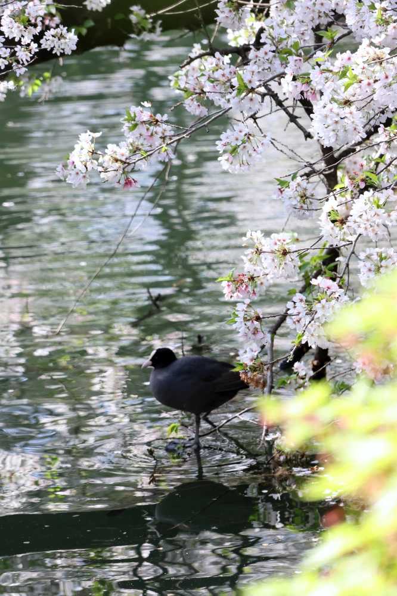
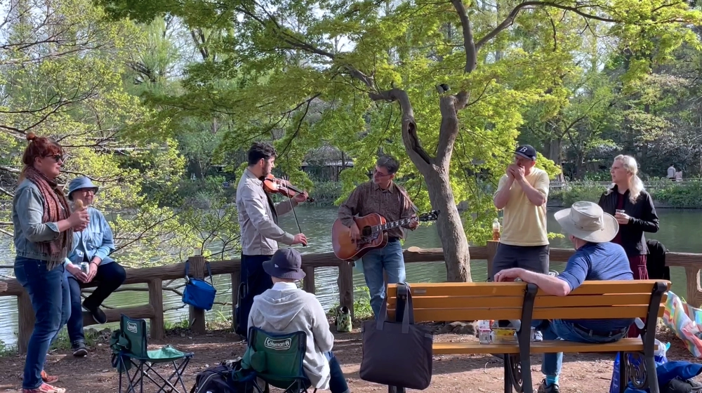
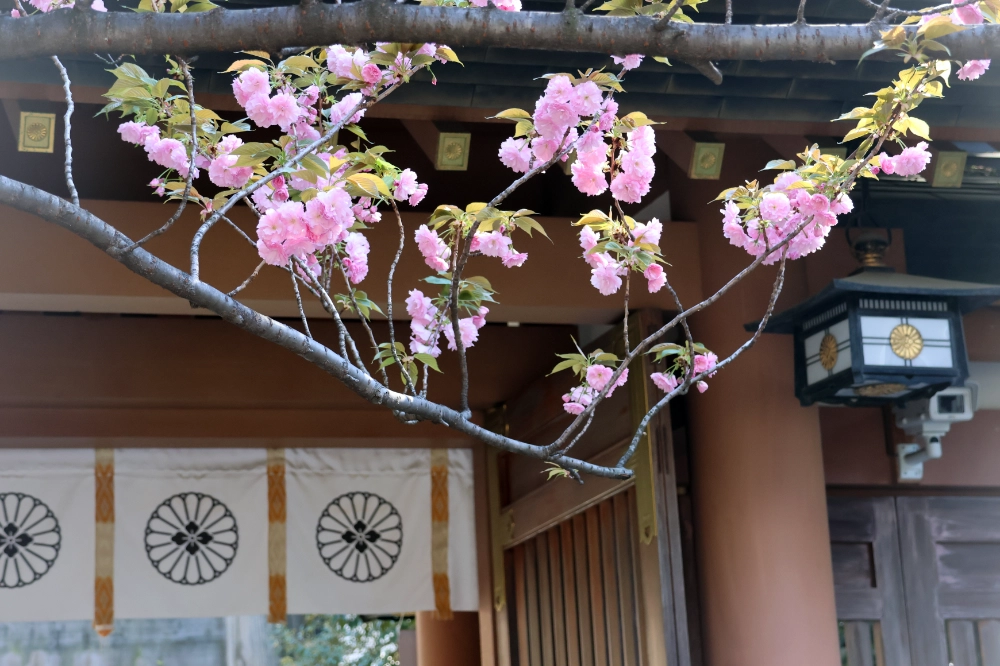
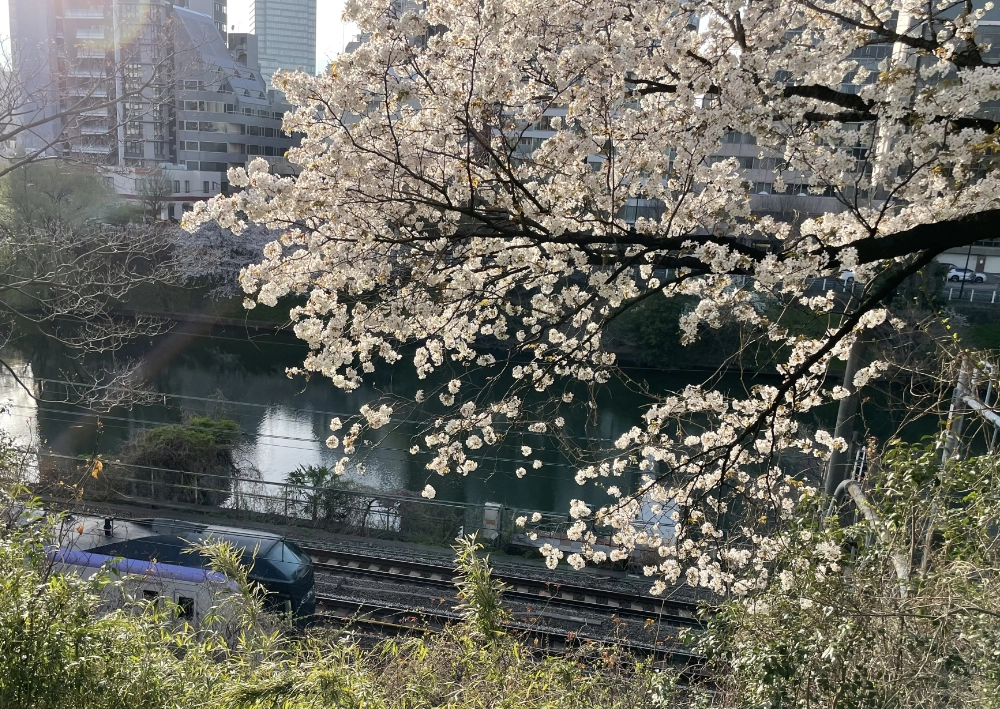
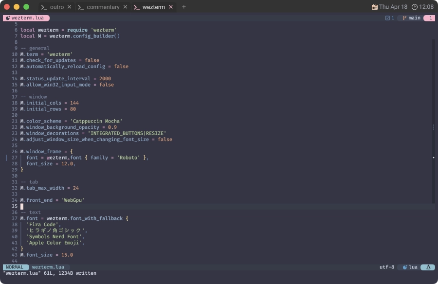
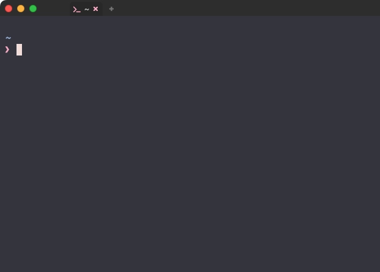
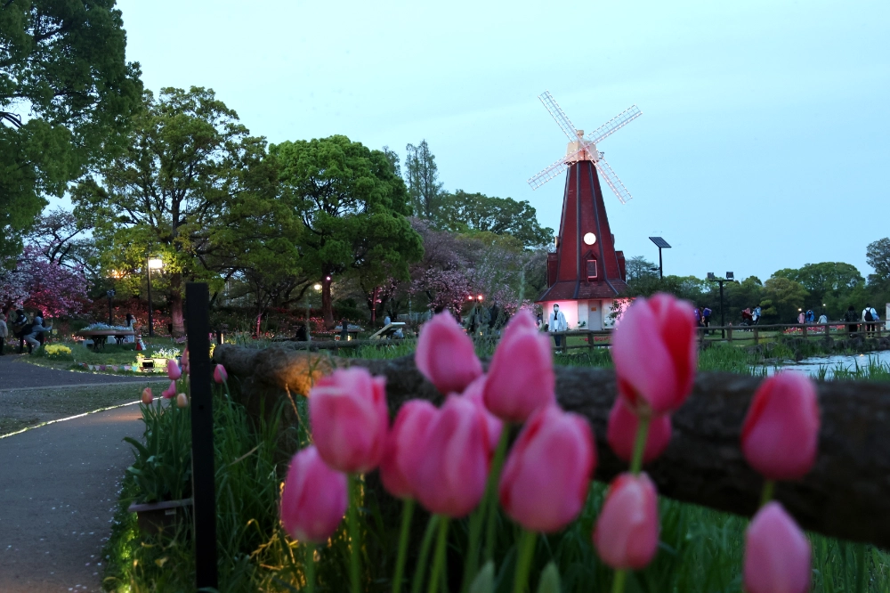

💻 WezTerm (meet me)
"March Comes in Like a Lion, and Goes Out Like a Lamb"
前回から間を置かず、3月の終わりに子羊のように去ろうかな〜🐑 ...とも思っていましたが、 "はるのかぜが あんなにうたっている" ことを子供たちに教えてもらったので、 これはもう春の始まりを見届けていかなきゃいけない...と、思った今日この頃でした🌸
I look at you all, see the love there that's sleeping
While my guitar gently weeps1
君たちを見ていると、そこに眠っている愛が見える
ギターは優しく泣くんだ
東京での満開日は全部曇りや雨の荒々しい予報になっていたので、「なんやまだライオンおるんかいな🦁」って感じでしたね。
もう "東京に空がないといふ" とかなんとかオチつけて丸く収めたろ〜かしら、とも考えましたが...。
ありました、空🌞
そうでした、吉祥寺に「ないものは無い」のでした❗
井の頭公園には、 もはや通ってるのかと言われるぐらい能天気に来まくってます。
ここ数ヶ月ぐらいは池のボート乗り場を改修していて、しばらくはスワン2もボートもいませんでした。
が❗
...ご覧の通り、今じゃすっかりですよ❗🦢🦢🦢
駅北口のバスロータリーの真ん中に "象の銅像" がありますが、 あのはな子🐘 がいたのもここです😇

鳥さんも羽休めに来るぐらいだし🐦⬛
こんなに HAPPY✨ な演奏にも巡り会えるし🎻

ほらね、吉祥寺に「ないものは無い」のです🥰
わたしも大好きなばしょです😄
⚙️ Configuration
ぐるっと巡ってきましたが、最後はWezTermの設定を少しだけ見直します🤗
wezterm.luaの記述方法があの頃から少し進歩しているので、
まずはここから始めましょう❗
-- Pull in the wezterm API
local wezterm = require 'wezterm'
-- This will hold the configuration.
local config = wezterm.config_builder()
-- This is where you actually apply your config choices
-- For example, changing the color scheme:
config.color_scheme = 'AdventureTime'
-- and finally, return the configuration to wezterm
return config
I look at the floor and I see it needs sweeping
目を向ければ 床の掃除が必要な気がするんだ
🔧 config_builder
肝心なのはここですね。
-- This will hold the configuration.
local config = wezterm.config_builder()
config_builderオブジェクトを使用するように案内されています。
The config builder may look like a regular lua table but it is really a special userdata type that knows how to log warnings or generate errors if you attempt to define an invalid configuration option.
config builder は、一見普通の lua テーブルのように見えますが、実は特別な userdata タイプで、 無効な Config オプションを定義しようとすると、警告をログに記録したりエラーを生成します。
ローカル変数名はconfigで案内されていますが、ここはなんでもいいです。
わたしはこのパターンだといつもMにしちゃうんで、Mで進めていいかな...❓
先頭で、こんな感じでオブジェクトを定義するように変えて...。
-return {
+local wezterm = require 'wezterm'
+local M = wezterm.config_builder()
このオブジェクトに対して色々追加していきます。例えば...
-color_scheme = 'Catppuccin Mocha',
+M.color_scheme = 'Catppuccin Mocha'
-window_background_opacity = 0.93,
+M.window_background_opacity = 0.93
こんな感じで書き換えていけば OK です。(末尾の,を取り除くのを忘れないで❗)
...そしたら、最後にこのオブジェクトを返してあげましょう😌
-}
+return M
これで完璧😉
I don't know why nobody told you
How to unfold your love
わからないんだ 誰も教えてくれなかった
どうすれば愛を伝えられる

東京大神宮もちょいちょい参拝させてもらってます⛩️
| 外濠公園 |
|---|
 |
この辺まで来たらこっちも見て回りたくなるでしょ❓ 🚶♀️
🧚♀️ Font
フォントについては、このサイトでは以下のように紹介していました。
font = require("wezterm").font("Firge35Nerd Console"),
特に不満がなければこのままでもいいんですが、
最新のフォントを自分で追っかけたい場合なんかだと、後の項で出てくるfont_with_fall_backを使うと良いです。
⛲ FontSets
...ってことで、まずはフォントを用意しましょう❗
🪺 nerd-fonts
nerd-fontsはWezTermに含まれているので特に設定はいらないんだけど、
前回はNerd Fontが含まれているFirgeNerdを使う方法を紹介していました。
2024/04/17 時点ではFirgeNerd・WezTermのどちらよりも、
本家のnerd-fontsのバージョンはだいぶ進んでいて、
新しいアイコンも続々と増えているので、定期的に確認してみるのも楽しいと思います😆
ってことで、今回は本家のnerd-fontsを使った楽しいほうで進めます。
Releases/ v3.2.0
The Easter release. Lets see which eggs can be found:
イースターリリースだよ。どんな卵が見つかるかな:
Releasesから感謝しながら最新版をダウンロードしましょう😉
好きなたまご🥚 を選べば良いのですが、このページではNerdFontsSymbolsOnlyを使って進めていきます。
❤️🔥 FiraCode
で、次に英字フォントを用意するんですが、ここでは一例としてFiraCodeを紹介します。
Fira Code: free monospaced font with programming ligatures
Fira Code: プログラミング合字のフリー等幅フォント
これも素直にReleasesから感謝しながらダウンロードするのが簡単でしょう😊
🎏 ヒラギノ角ゴシック
これだけだと "漢字・ひらがな・カタカナ" がイマイチに戻っちゃうので、日本語に対応したフォントも用意しましょう。
わたしはmacOSに標準で入っているヒラギノ角ゴシックを使っているので、ここでは特に示せる手順がありません😅
🐣 font_with_fall_back
フォントが用意できたら、これらをWezTermで使うためにfont_with_fall_backを設定しましょう❗
This function constructs a lua table that configures a font with fallback processing. Glyphs are looked up in the first font in the list but if missing the next font is checked and so on.
この関数は、フォールバック処理でフォントを設定する lua テーブルを構築します。 グリフはリストの最初のフォントで検索されますが、見つからない場合は次のフォントがチェックされます。
The first parameter is a table listing the fonts in their preferred order:
最初のパラメータは、フォントを優先する順番に並べたテーブルです：
local wezterm = require 'wezterm'
return {
font = wezterm.font_with_fallback { 'JetBrains Mono', 'Noto Color Emoji' },
}
これで、複数のフォントを好きなように組み合わせて使用することができます😌
まずはこんな感じで書き換えてから...、
- font = require("wezterm").font("Firge35Nerd Console"),
+ M.font = wezterm.font_with_fallback {
+ }
このリストに前節で用意したフォントを追加します😽
M.font = wezterm.font_with_fallback {
+ 'Fira Code',
+ 'ヒラギノ角ゴシック',
+ 'Symbols Nerd Font',
}
macOSの場合は、さらにこんなのを入れておくのもいいかも...❓
M.font = wezterm.font_with_fallback {
'Fira Code',
'ヒラギノ角ゴシック',
'Symbols Nerd Font',
+ 'Apple Color Emoji',
}
他のOSでも似たようなフォントセットがあるのかどうかは、わたしがよく知らないのでごめんなさい😿
綺麗に表示できたかな❓☺️

🪟 Window
「そういえばライトアップされた桜をまだ見てないな〜」と気づきました。
満開日もとうに過ぎて、おまけに雨も降っちゃったんで、もう無理かなーとも思いましたが...。
ありました、八芳園🌝
場所が白金台なので、ちょっと前のわたしならビビり散らかしちゃうことこの上なし❗
...でしたが、安心してください❗
今のわたしは "とやマネーゼ"...❗
"6000 とやマネーゼ" なのです🥴
I look at the world and I notice it's turning
目を向ければ 世界が変わりつつあることに気づいたんだ
たとえ "億万シロカネーゼ" と並んでも互角であることに疑いの余地はありません❗
ごめんあそばせ〜🤭
I don't know how someone controlled you
They bought and sold you
わからないんだね 操られていることが
君は誰かに 売られて 買われてる
💖 window_decorations
window_decorations = "INTEGRATED_BUTTONS|RESIZE"- place window management buttons (minimize, maximize, close) into the tab bar instead of showing a title bar.
タイトルバーを表示する代わりに、ウィンドウ管理ボタン (最小化、最大化、閉じる) をタブバーに配置する。
これは面白いので、ぜひ取り入れてみましょう😆
そしたら Configuring Mouse Assignments で書いた、タイトルバーを操作するためのコードはもう、ぽいっちょ❗うるのねん❗
return {
mouse_bindings = {
- {
- event = { Down = { streak = 1, button = 'Left' } },
- mods = 'NONE',
- action = act.EmitEvent 'show-title-bar',
- },
},
}
- local TITLE_BAR_DISPLAY_TIME = 3000
- function DisableWindowDecorations(window, interval)
- if interval then
- wezterm.sleep_ms(interval)
- end
-
- local overrides = window:get_config_overrides() or {}
- overrides.window_decorations = nil
- window:set_config_overrides(overrides)
- end
- wezterm.on('window-focus-changed', function(window, pane)
- if window:is_focused() then
- return
- end
-
- DisableWindowDecorations(window)
- end)
- wezterm.on('show-title-bar', function(window, pane)
- local overrides = window:get_config_overrides() or {}
-
- overrides.window_decorations = 'TITLE | RESIZE'
- window:set_config_overrides(overrides)
- end)
...ってやれば、こんな外観になるはずです🍦
| before |  |
| after |  |
このサイトでも、もう散々この状態でスクリーンショットを載せてるんですけどね❗
Status Barに表示していた項目は、各々でうまく調整してください😅
(特にLeft Statusは邪魔に見えちゃってるかもしれない...。)
With every mistake, we must surely be learning3
全ての過ちに、学び取るものがあるはずなんだ
🎁 Wrap Up
まあ、無理やり詰め込んだ感じも否めないけど、これでわたしがやりたかった事は大体やれたかな❗
この章も、ちょっと注釈みたいなの並べてさっさと終わるものだと思っていたんだけど、なんか気づけばガッツリやってました😅
I don't know how you were diverted
You were perverted, too
わからないんだ 君がどのように逸れてしまったのか
歪んでしまったんだ、君も
...でも、ちゃんとやり遂げることが出来ただろう❓😏
新しいことを始めるのもいいし、今やっていることのレベルを上げるのもいいし...。
そろそろみんな次のステップに進まないとね😆
🎸 While My Guitar Gently Weeps
な〜んて言いながら、もう一回だけ話飛ぶんですけど、オランダに行ってきたんですよ〜😋

間違えました、いたばしのオランダでした🦧
I don't know how you were inverted
No one alerted you
わからないんだ 君がどのように倒錯してしまったのか
誰も君に言ってくれなかったんだ
色々開き直って、ず〜っとすっとぼけながらここまで来たんだけど、結局何が言いたいかっていうとね...、
前を向いて、まわりに目を向けてごらん。
...ほら❗わるくないだろ❓🤗4
🎸 Still, my guitar gently weeps
見るに見兼ねてなのか、なんかもう自分が「耐えられまへん」なのかもしれないんだけど、 縁あって再登場だ。5
When you’re through with life
And all hope is lost
きみが全てを尽くして
目の前が真っ暗になったとしても
いや、知ってるよ。大人達が「下がった」だの「落ちた」だの騒いでるのは 🫠
なんならわたしも巻き込まれてるし🙃
And when the night is cloudy
たとえ夜が曇っていたとしても
なんなら 9020.T も持ってるし🤣
でも、"ドンドンぶち上がる" 花火を見てる方がよっぽど健全だと気づいたんだ❗
There is still a light that shines on me
それでも僕を照らす光はある
...ほら❗わるくないだろ❓🤗
悩みなんざ吹っ飛ばせ！
笑え 笑え！
1: While My Guitar Gently Weeps (by The Beatles): George Harisson によって書かれ、彼が "眠っている愛" と呼ぶ "普遍的な愛" に対する世界の実現不可能な可能性への落胆を歌っている。
Harisson が Warrington の両親を訪ねていたときにこの曲のインスピレーションが湧き、"易経 (変化の書)" を読み始めた。 「物事は単なる偶然に過ぎないという西洋的な見方とは対照的に、 全てのものは他の全てのものに対して相対的であるという東洋的な概念に基づいているように僕には思えた」。 この相対主義という考え方を受け入れ、本を開いてたまたま最初に目にした言葉が「優しく泣く」であったことに基づいて曲を書くことにした。
1968年の春に महर्षि महेश योगी (Maharishi Mahesh Yogi) の下で超越瞑想を学んでいたインドから帰国後の The Beatles 内での不調和な雰囲気を反映している。 バンドメンバーの仲間意識の欠如に対し、 Harisson は友人の Eric Clapton をレコーディングに招くことで対抗した。
9月6日、Surrey から London へ向かう車中で、Harisson は Clapton にこの曲でギターを弾いてほしいと頼んだ。
Clapton は、ソングライターとしての Harisson の才能を認めており、 その能力は長い間 Lennon と McCartney の陰に隠れていると考えていたが、それでも最初は参加を渋った。 「それはできない。The Beatles のレコードで演奏する人なんて誰もいないよ。」
結果として Clapton はリード・ギターをオーヴァーダビングしたが、その貢献については正式にクレジットされなかった。
Clapton は「"While My Guitar Gently Weeps" はグループ内での George の精神的な孤立を訴えている」と述べている。
歌詞の中で、Harisson は普遍的な愛というテーマと、 インド音楽の影響を受けたWithin You Without You のような楽曲で顕著であった哲学的な懸念を再び取り上げている。
この曲は、多くの聴衆が Harisson の作品を Lennon-McCartney の作品と互角とも言えるほど素晴らしいことに気付くきっかけとなった。 Wikipediaより
2: Harisson は Cream のレコーディングに参加することで Crapton に応酬した。 「Eric が曲を書くのを手伝ったんだ。Cream のアルバムのために曲を考えなければならなかったんだけど、Eric はまだ書いていなかったんだ。 僕たちは向かい合って仕事をしていて、僕は歌詞を書いていた。Eric はそれを逆さまにして読んで、'BADGE って何だ？' (手書きの 'Bridge' という文字を読み間違えた)。その後、酔っ払った Ringo が入ってきて、 'I told you 'bout the swans that they live in the park (白鳥が公園に住んでいることも話した)' という一節をくれたんだ。」 この時に制作された Badge は1969年、Cream の最後のアルバム Goodbye に収録された。 The Beatles Bibleより
4: この言い回しはもちろん John Lennon のまね〜🤪
5: 2024/08 追記。